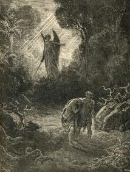
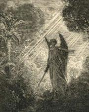

The Fall of Man was Positively Humane: A Naturalist's Interpretation of The Fall
I made a geeky comic that trades off the story of The Garden of Eden and the Fall of Man. I do not endeavor to explain that comic here, but it is apparent that the interpretation of the Fall of Man is colored in such a negative light that I feel I must present my own positive interpretation.
The creation story described in Genesis is often used by Biblical Fundamentalists to dismiss an alternative story of humanity’s origins that has emerged from the sciences. Fundamentalists insist that a literal interpretation is the only legitimate interpretation of the Bible. It’s as though they are committed to the idea that, “God can do all things—except use a metaphor.” Genesis, and The Fall specifically, is done a disservice by these Fundamentalists because The Fall has a beautiful interpretation seen through the lens of science, which speaks well of it. What is a naturalist’s interpretation of Genesis? It is not a story that details Man’s fall from grace; it is a narrative for Man’s ascent from merely animals to moral animals.
This essay does not imply that the interpretation given here was necessarily intended by the original authors of Genesis. One might ask, why consider the interpretation if the authors did not originally intend it? Because texts are mirrors in that they often reveal more about the reader than the original author, and often profitably so. Consider the Declaration of Independence. Its meaning is more beautiful today than when it was written because it had the capacity to grow beyond the constraints of its time. Americans read and revere “all men are created equal” in an inclusive sense, not of applying exclusively to white males. It is no injustice that American culture and language have grown beyond what Thomas Jefferson and the Second Continental Congress had intended. It is in this sense of working with a living document that this essay will treat The Fall.
The event that this essay focuses on is foreshadowed by this passage.
“But of the tree of the knowledge of good and evil, thou shalt not eat of it: for in the day that thou eatest thereof thou shalt surely die” (King James Version, Gen. 2.17).
Of course, Adam and Eve do eat from the Tree of Knowledge. It is the consequences of that action that propels this naturalistic interpretation. Let us address some cherry-picked consequences in turn.
Child Birth
God punishes women with difficult child birth.
“Unto the woman he said, I will greatly multiply thy sorrow and thy conception; in sorrow thou shalt bring forth children” (Gen. 3.16).
Interpreting this from a biological perspective, the capacity to acquire knowledge relates to human brain size. Human brains increased in size dramatically compared with their closest evolutionary kin, their skulls increasing in size too. The most obvious obstacle to ever increasing brain and skull size for a baby is its mother’s pelvis. For a quadrupedal animal, this might be an easier burden to bear, but human pelvises had only recently been shaped for bipedalism, an awkward arrangement to deliver big-headed babies. This made child birth more difficult for women. Big skulls may account for the suffering that women undergo during child birth. Difficult child birth is a consequence of big-brained babies, and big brains are a prerequisite for general knowledge.
Death
God punishes both man and woman for their disobedience with death.
“In the sweat of thy face shalt thou eat bread, till thou return unto the ground; … for dust thou art, and unto dust shalt thou return” (Gen. 3.19).
Traditionally, this is interpeted as an entirely bad outcome. However, consider what death is to an animal of limited faculties. Without foresight, does death rightly exist? Animals die certainly, but what is to say that death exists from an animal’s perspective? From the animal’s perspective death may not exist at all. Animals may feel fear and vigorously avoid things that lead to death, but that does not mean they comprehend it anymore than they understand that sex leads to offspring. They do it because it works; understanding is not necessary. Death only becomes appreciable in a creature with foresight. If knowledge grants one insights into what the future holds, then one must come to grips with their own mortality and death. Death is a necessary consequence of knowledge and foresight, not an incidental punishment.
Paradise Lost
The breaking of God’s commandment is seen as Man’s Fall from Grace. Traditionally, it has a very negative connotation: Man brought sin into the world. Man was cast out of the Garden of Eden, a paradise on Earth. Consider it instead as the introduction of morality into the world—including both sin and virtue. Prior to that, there were only animals. Animals are not moral agents. Animals kill one another and even humans, but we do not call them murderers. Their actions are amoral. Genesis introduces an agent that makes a transition from an amoral world to a moral one. Prior to eating from the Tree of Knowledge, Adam and Eve were amoral. They could not divine right from wrong, so they could not have rightly understood disobeying God was wrong. In that sense their transition from amoral to moral cannot be wrong—that would mischaracterize the act as a moral act; it would be like calling a lion a murderer for killing a gazelle. Man does not introduce sin alone into the world; Man introduces morality into the world which includes both sin and virtue.
Humanity Gained
The traditional interpretation of the Fall has not let the preceding point go unnoticed since Eve is blamed more so than Adam. For if Eve could not tell right from wrong prior to eating from the Tree of Knowledge, she could certainly tell afterward. Thus, by Eve offering Adam fruit from the Tree of Knowledge, she knowingly abetted Adam’s disobedience of God’s commandment. However, consider again what it would mean for Eve to leave Adam as an amoral animal. The Garden of Eden is not a paradise hidden away from humanity; the amoral animal kingdom is the ever present Garden of Eden, but one we are forbidden from entering lest we become animals once more. One could recreate the Garden of Eden on any remote island. One need only release a human child with no language, no knowledge, no companionship, but plenty of food—but such an act would be monstrous. If one happened upon a child placed in such a condition who grew to be a man, would it not also be monstrous to leave them in that state? Eve apparently thought so. Morality forces one to wrestle with more than just the will to obey; it forces one to discern good and evil to the best of one’s ability and challenges one to act accordingly.
The Tree of Life
There are two trees named in the Garden of Eden. Each tree can be tied directly to a scientific idea. The Tree of Life is introduced in Genesis as God dealt with Man’s trespass.
“And the Lord God said, Behold, the man is become as one of us, to know good and evil; and now, lest he put forth his hand, and take also of the tree of life, and eat, and live for ever” (Gen. 3.22).
Four and half billion years ago, the Earth was radically altered by the introduction of something new—a replicator, a gene. Perhaps it was a primitive RNA. That replicator evolved and eventually spawned all the diversity of life. Darwin envisioned life as a tree with its descendants branching away from the root. Are genes the Tree of Life from Genesis? Genes do seem to hold the secrets to life and death. If one understood genes completely such that he or she could reshape them, could death be eradicated? Possibly. Researchers like Aubrey de Grey insist this is a viable idea (Hooper 1).
“So he [God] drove out the man; and he placed at the east of the garden of Eden Cherubims, and a flaming sword which turned every way, to keep the way of the tree of life” (Gen. 3.24).
If it is only our ignorance of genes that prohibits us from picking the fruits of the Tree of Life, then the staggering complexity of our genes becomes the protector of the Tree of Life.
The Tree of Knowledge
The Tree of Knowledge of good and evil that Adam and Eve ate from also has its own scientific representative. With the introduction of humans on Earth, a new replicator has been released and it too is producing radical effects—the meme. It is crudely analogous to a gene as the cultural unit of selection. Instead of memes trying to replicate themselves in bodies as genes do, memes replicate themselves in brains (Blackmore 37). A catchy tune that is hard to get out of one’s head, that is a meme. A chain letter that orders one to replicate it for dubious rewards; it is a meme. The ten commandments, those are memes. What is not a meme? An experience is not a meme. An idea that is never communicated is not a meme. In the same way that the Tree of Life fans out with variation and is trimmed by natural selection, memes branch out with great variety, dying out essentially when no minds or artifacts serve as their hosts. This tree of ideas, of memes, is the Tree of Knowledge not only of good and evil but of all human knowledge.
Conclusion
Genesis is an ancient story. From the difficulty of child labor, to facing death, to the enduring struggle to discern good from evil, its imagery does not lose its potency by marrying it with science; nay, it is enriched. The Fall captures the transcendent issues of morality and mortality. It is a part of humanity’s heritage. It was crafted by many hands during humanity’s cultural evolution. It grew up with us, and we are challenged to allow it to grow further still. Genesis has the capacity to grow as this essay has shown. Many of the seminal events in Genesis have an interpretation that unites the poetry of our past with the science of our present. In Genesis humans claimed the Tree of Knowledge, and the creation of ideas, or memetic engineering, has been our domain while the Tree of Life and its secrets have remained out of reach. The creation of new life, genetic engineering, is emerging however. It will doubtlessly change the way we live and die. We may be on the brink of entering an age where we move beyond the flaming sword and claim the Tree of Life for ourselves.
Works Cited
Blackmore, Susan. The Meme Machine. Oxford: Oxford University Press, 1999.
Hooper, Joseph. “The Prophet of Immortality: Controversial theorist Aubrey de Grey insists that we are within reach of an engineered cure for aging. Are you prepared to live forever?” Popular Science Jan. 2005. Examined 1 July 2008 http://www.popsci.com/scitech/article/2005-01/prophet-immortality
The Holy Bible: King James Version. Iowa Falls, IA: World Bible Publishers, 2001.
Wright, Robert. The Moral Animal: Why We Are, the Way We Are: The New Science of Evolutionary Psychology. New York: Vintage Books, 1994.